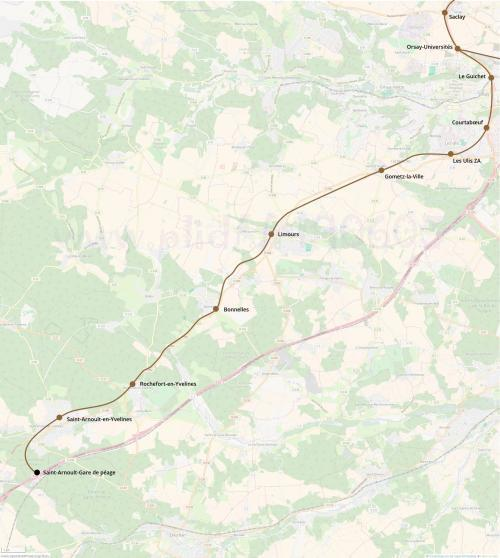

RER G Saint-Arnoult-en-Yvelines
RER G Saint-Arnoult-en-Yvelines
Orsay - Université - Saint-Arnoult-en-Yvelines
Création de la ligne G du RER.
Cette branche du RER G à une vocation à être l'axe d'expansion du pôle de haute technologies de Saclay sur le plateau des Ulis et au delà.
Après avoir traversé vallée de l'Yvette en longeant la RN 118, le tracé traverserait les Ulis avec deux gares puis suivrait l'ancienne ligne d'Ouest Ceinture à Chartres par Gallardon jusqu'à Saint-Arnoult-en-Yvelines ou il bifurquerait vers la gare de péage pour permettre de créer une correspondance RER-Autoroute (A10). Un raccordement vers la LGV Atlantique permettrait aux TGV de passer par le RER G pour rejoindre la gare Montparnasse en cas de dérangement de la LGV entre Saint-Arnoult et Paris. Entre Saint-Arnoult et Chartres, on pourra envisager la réouverture de la ligne et intégrer sa desserte au transilien N via le raccordement de Clamart-Vélizy.
Voir les autres projets associés à cette ligne
Carte

Cliquer pour agrandir
Stations
| Nom | Correspondances | Communes |
|---|---|---|
| Orsay - Université | ||
| Le Guichet | ||
| Courtaboeuf | ||
| Les Ulis - ZA | ||
| Gometz-la-Ville | ||
| Limours | ||
| Bonnelles | ||
| Rochefort-en-Yvelines | ||
| Saint-Arnoult-en-Yvelines | ||
| Saint-Arnoult - Gare de Péage |
Si ce projet vous intéresse n'hésitez pas à le (re-)partagez sur les réseaux sociaux ou par courriel ou à en parler autour de vous.
Si vous souhaitez travailler à la concrétisation de ce projet, passez à l'action et contactez nous.
Commenter